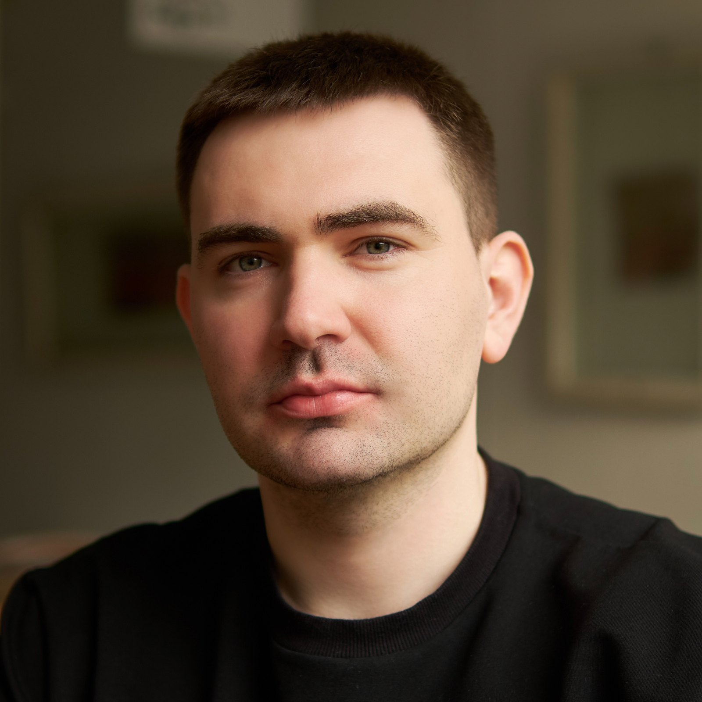
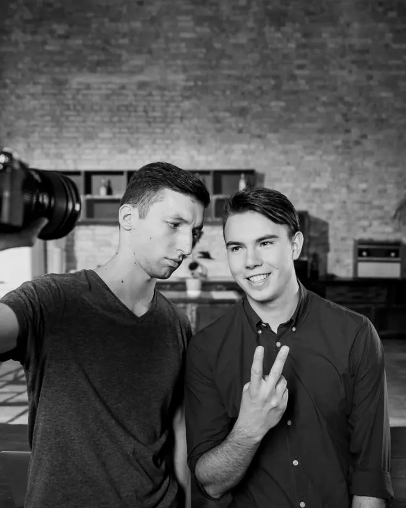
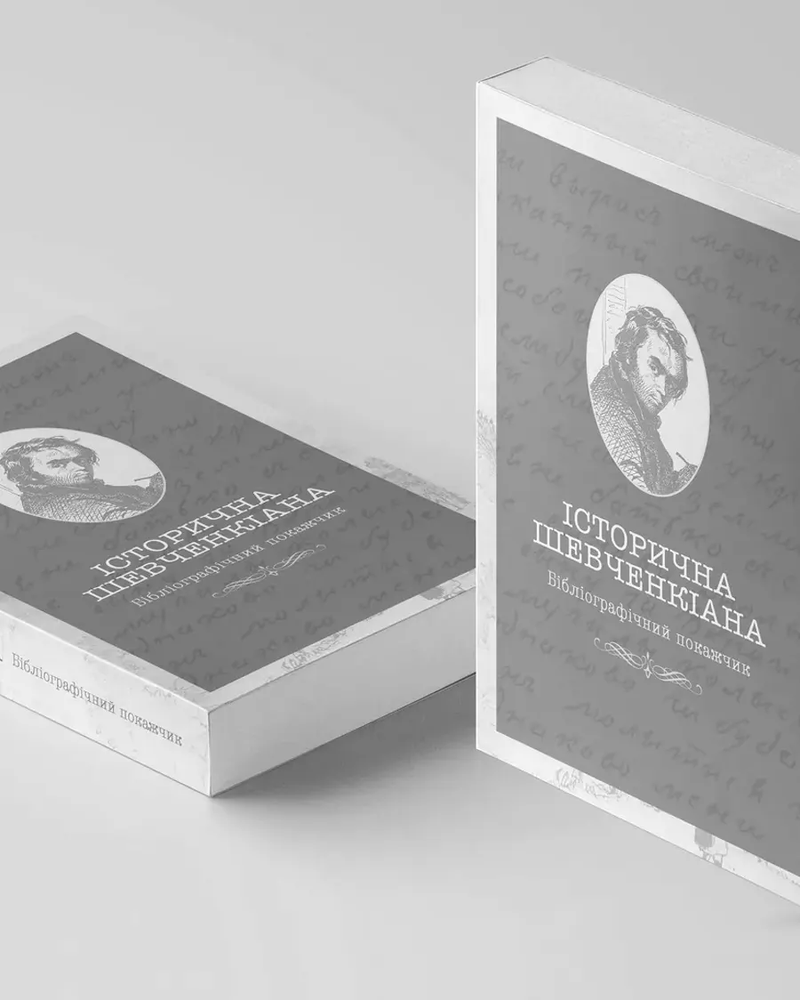
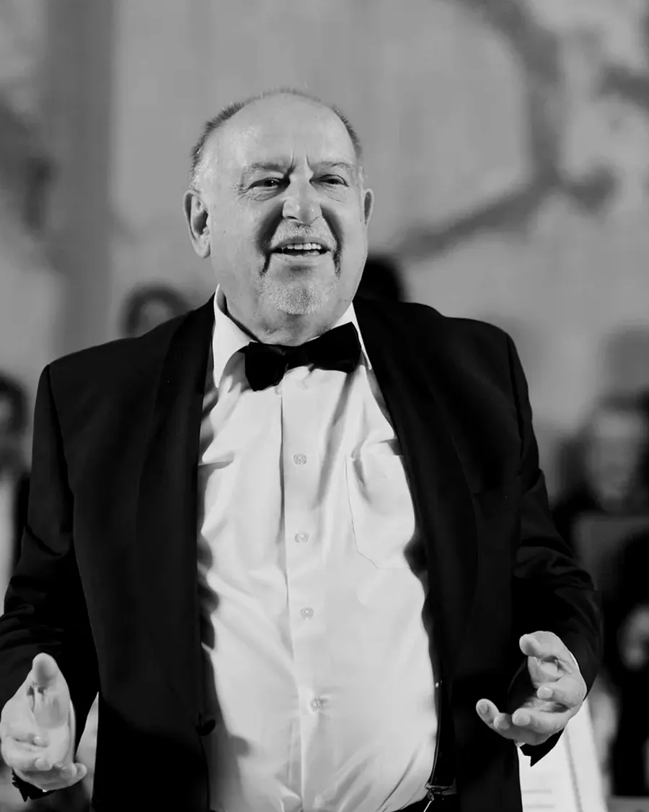
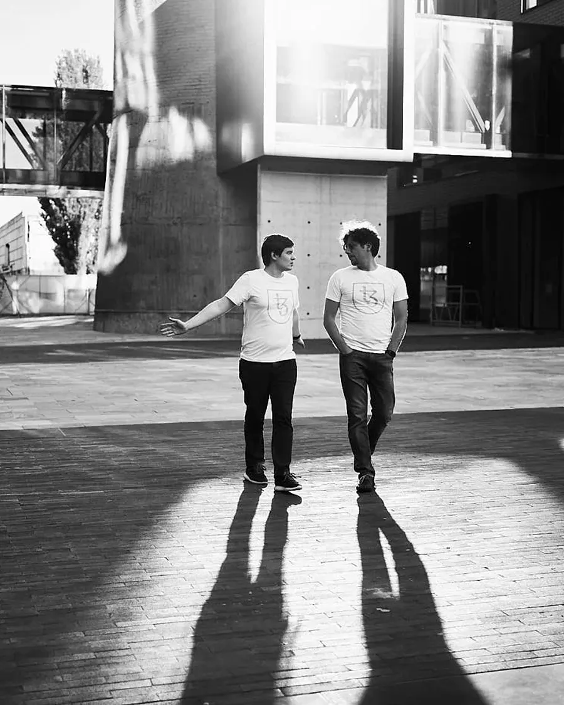

Kyrylo Rusanivsky
Creative industry professional with 13 years of experience: video editor and graphic designer. I edit interviews, YouTube series and social media videos; I design and typeset books, covers and print materials. I also shoot events and portraits.
Graphic Designer Video Editor Photographer

What I do
-

Video editing
-

Print & Design
-

Photography
-

Street photography
Social
01BehancePortfolio↗ 02Instagram@rusanivsky.photography↗ 03LinkedInProfessional↗ 04FacebookSocial↗ 05Threads@rusanivsky↗ 06TikTok@rusanivsky↗Enquiries
Tell me the format, the deadline and the budget.